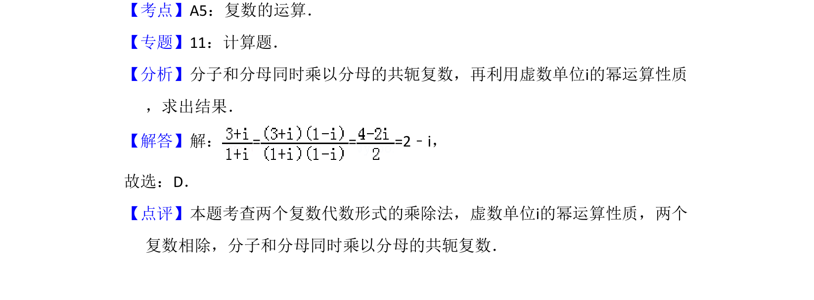

考点：复数运算 复数的乘除
该题考查复数的除法运算，要求将复数化简为标准形式。

📄 原 PDF 第 1 页：
素材/真题/吉林/2008-2024·（吉林）数学高考真题/2017年高考数学试卷（理）（新课标Ⅱ）（解析卷）.pdf
1．（5分）=（ ） A．1+2i B．1﹣2i C．2+i D．2﹣i
【考点】A5：复数的运算．菁优网版权所有 【专题】11：计算题． 【分析】分子和分母同时乘以分母的共轭复数，再利用虚数单位i的幂运算性质 ，求出结果． 【解答】解：= = =2﹣i， 故选：D． 【点评】本题考查两个复数代数形式的乘除法，虚数单位i的幂运算性质，两个 复数相除，分子和分母同时乘以分母的共轭复数．